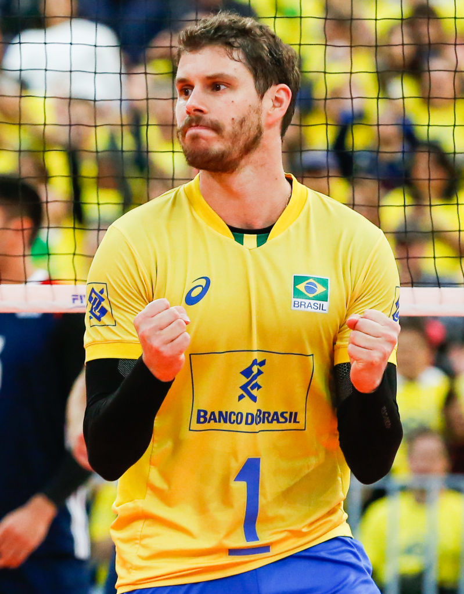

O corpo se beneficia diariamente, pois a atividade física fortalece o tônus muscular, ajuda na flexibilidade e no fortalecimento dos ossos e articulações. Além de favorecer a perda de peso, redução da gordura corporal o esporte ajuda a regularizar taxas importantes do nosso metabolismo
Os benefícios não param por aí, ao praticar uma atividade física o fluxo sanguíneo cerebral melhora e isso, além de favorecer a diminuição do estresse, da ansiedade e da depressão, ajuda significativamente na melhora da autoestima.
As atividades fisicas sao muiuto importante para o aprendisado, é por isso que hoje vamos falar um pouco das atividades fisicas que praticamos.
